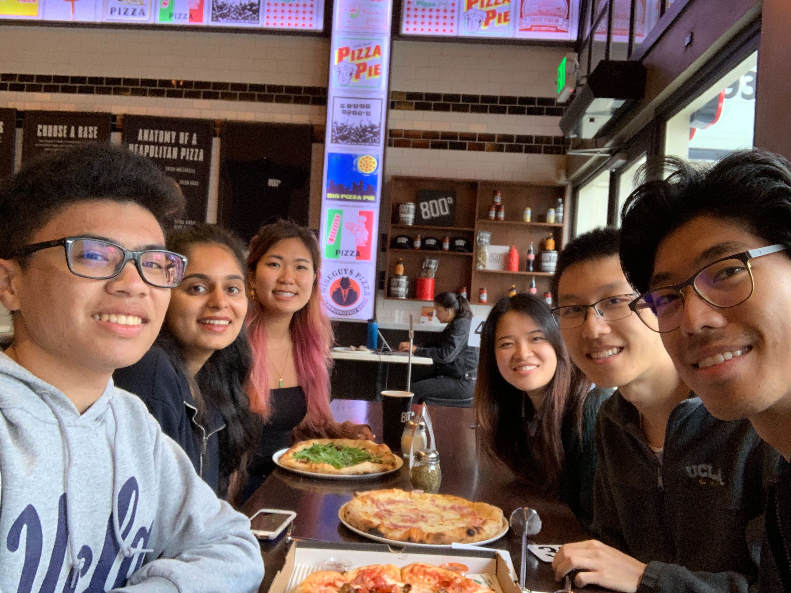
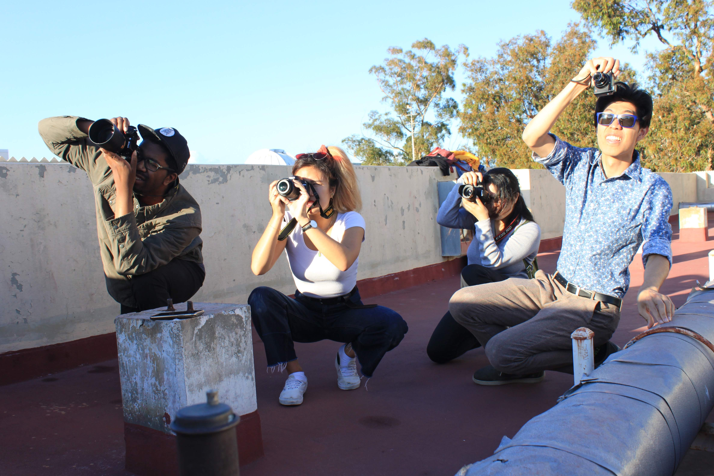
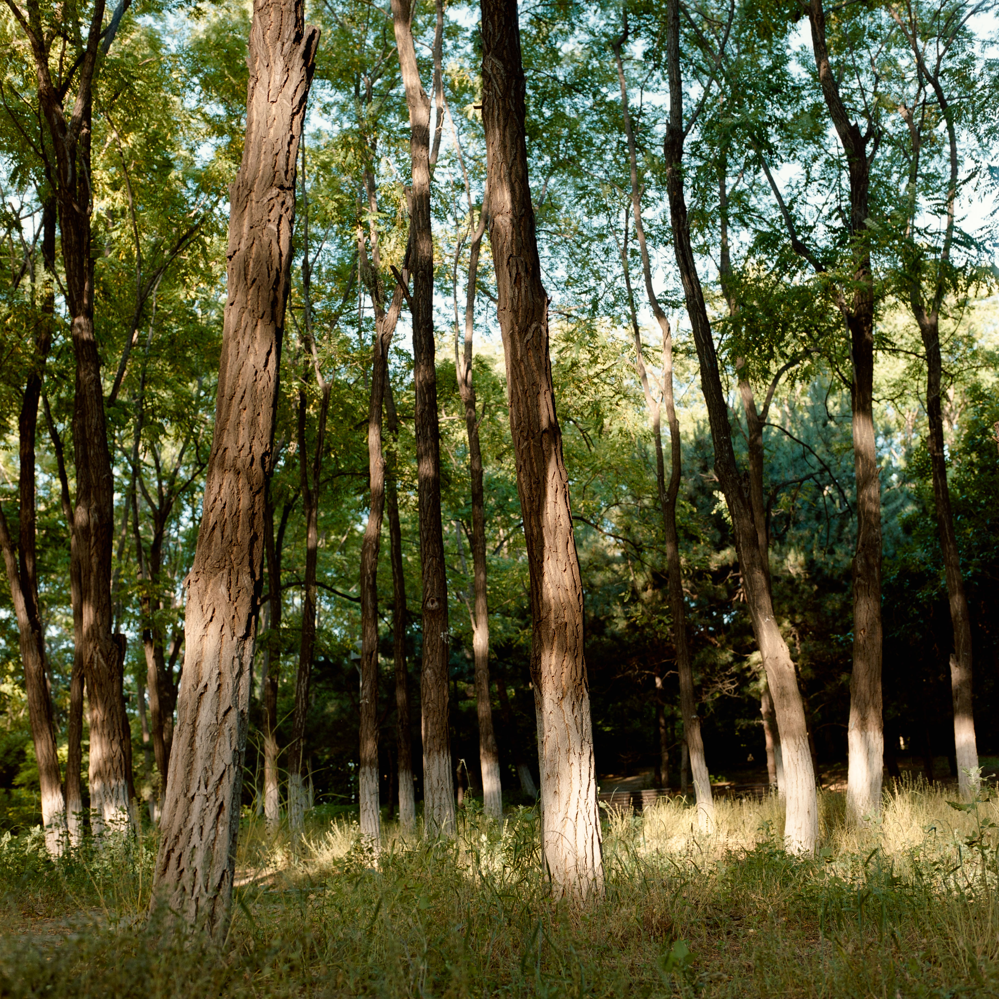
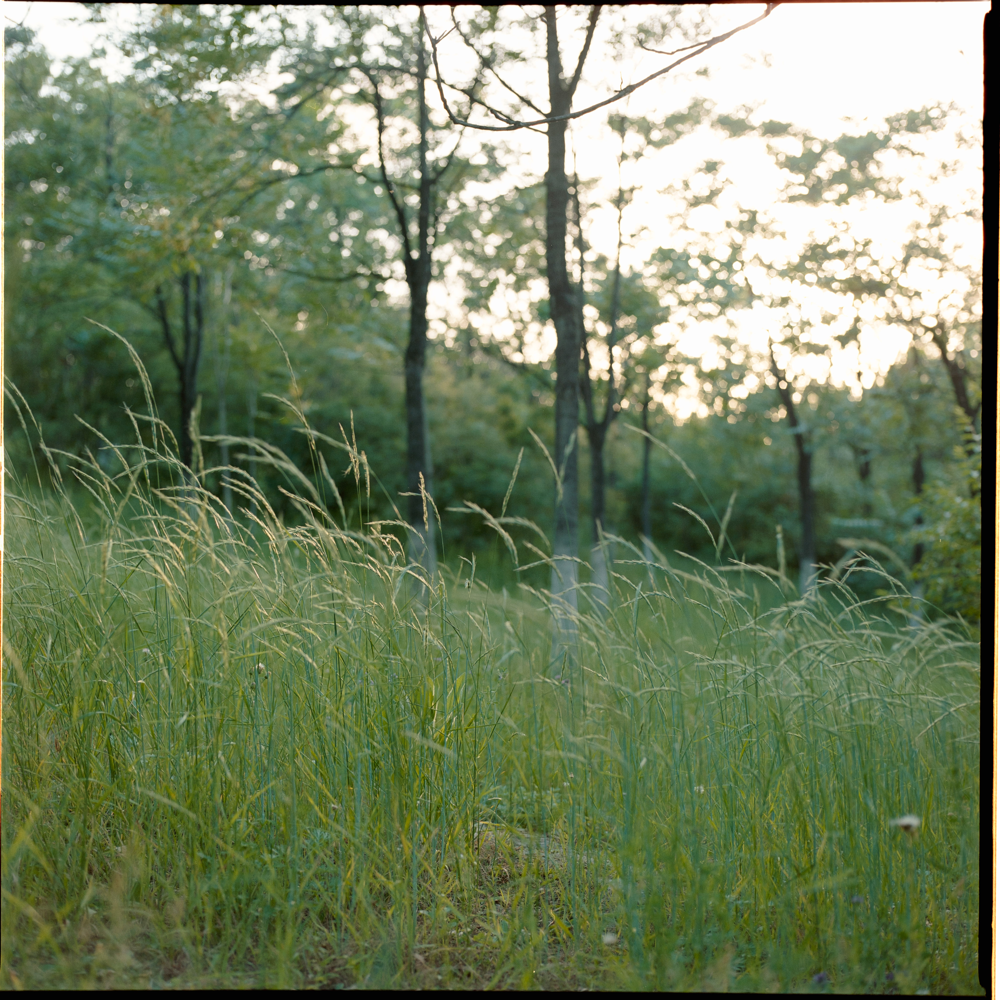
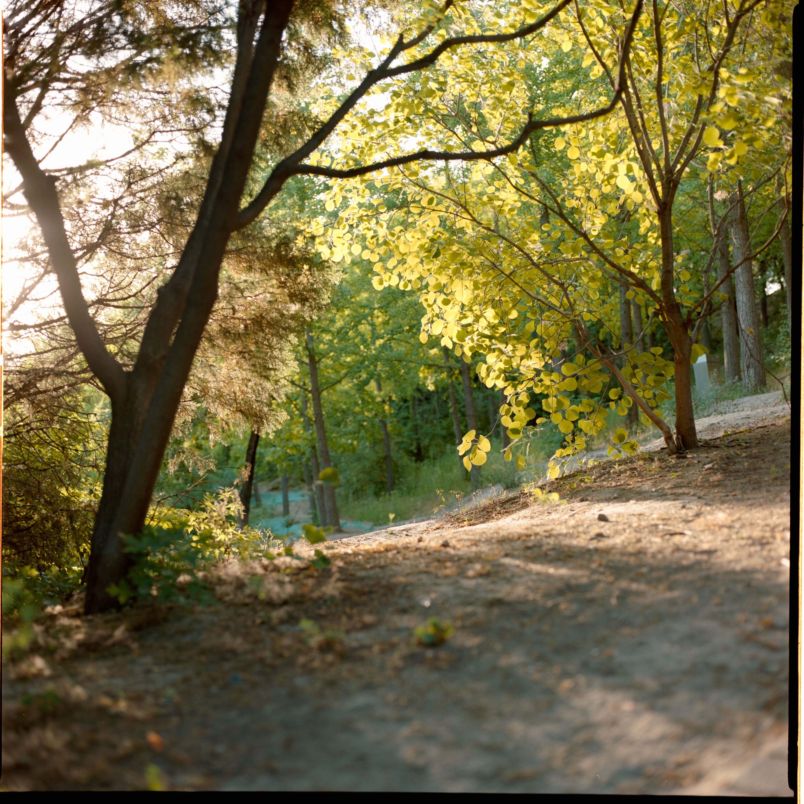
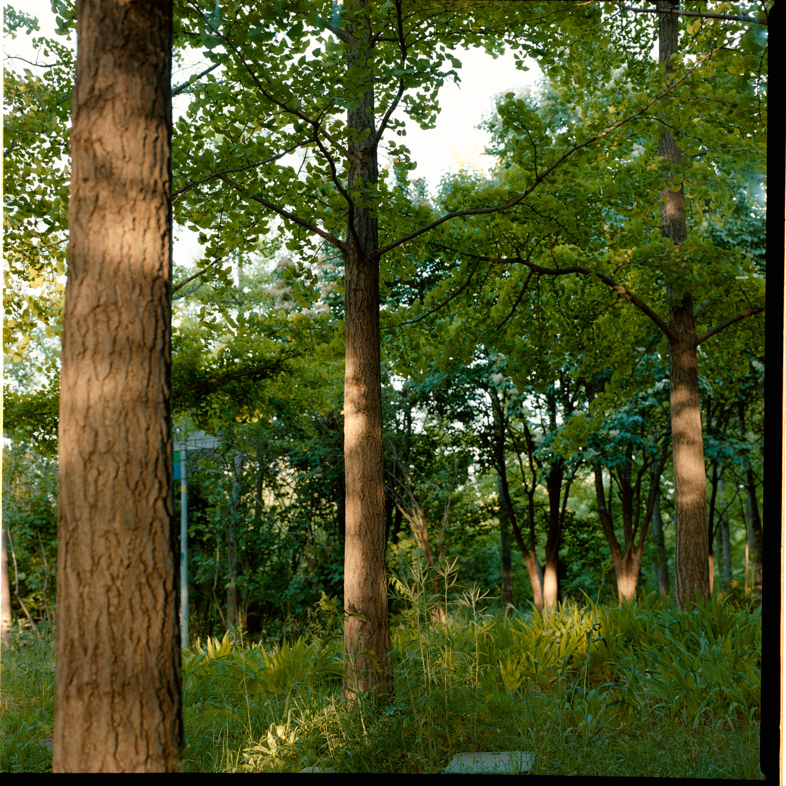

Other Projects
Maybe you don't know this about me already, but I am an avid photographer as well. One of my most important projects outside of work used to be running Photography Club at UCLA. Check out our club board!


I am also a big fan of film photography. I feel like film photography is a great way to slow down and be more deliberate. Each shot costs you quite some money, after all. While I can fire off hundreds of shots on my digital camera in a minute without worries, I have spent an hour taking a single picture on film. The other thing I love is the feeling of clicking a mechanical shutter that has endured decades of time. Check out some pictures that I took from a park next to my home.



